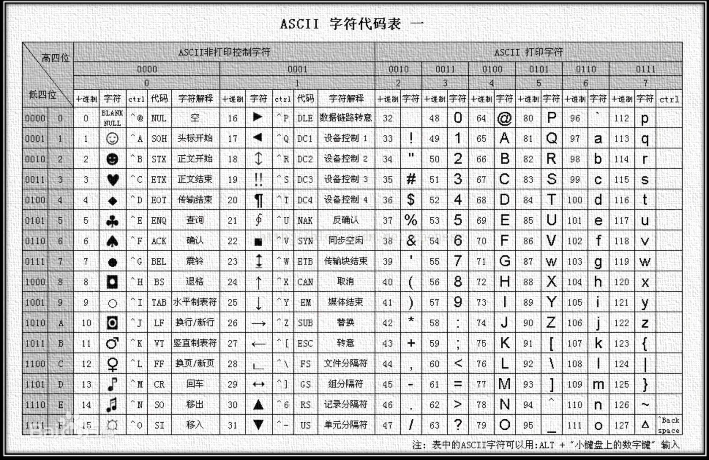
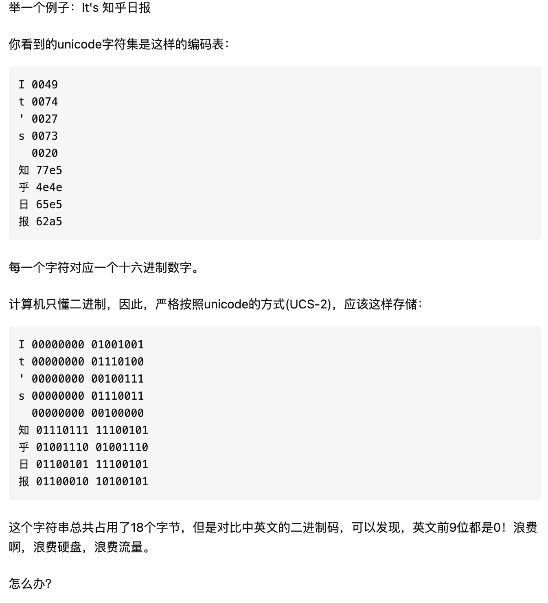
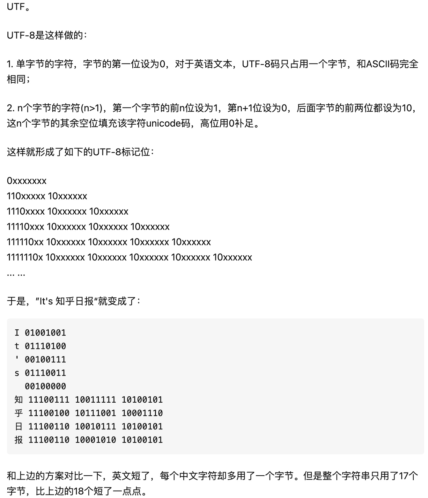

从UTF-8到Bytes数组都经历了什么
最近公司的项目需要和蓝牙硬件做对接，硬件部门要我将一个UInt32位的时间戳转成一个低位在前的UInt8的Bytes数组后再做加密后传递给他。说实话长期用高级语言编程，对这些Byte数组之类的已经不是很熟悉了，至于什么UTF-8，Unicode，String，Int8...32...64都经常打交道，但在高级语言中，底层帮我们做了太多的事，以至于你不关注它，也没有对你产生什么影响。但这次不行了，所以我打算把这件事彻底搞懂。
首先我们要明确一点，就是计算机的存储，各种传输都是二进制的，他们的最小单位是8位，也就是1Byte。所以任何数据，其实都可以看做是一个Bytes数组。
数字类型
我们先说数字类型到Bytes数组。这个很简单。我们举例说明
例如一个UInt32的时间戳是 1614591882
将UInt32位时间戳转为低位在前的4位UInt8数组的结果是: [138, 183, 60, 96]
乍一看好像一点规律没有呢，主要是因为我们都给转换成了10进制。让我们用二进制看一下。
1614591882的二进制是01100000001111001011011110001010一个32位的二进制数。
让我们把它按照低位在前的形式转成一个Bytes数组[10001010, 10110111, 00111100, 01100000]
然后我们再把数组中的每个元素转成十进制，其实就是上面提到的那个数组[138, 183, 60, 96]
我们可以发现用十进制看起来很不直观，但二进制太长，很容易看错，看起来也很累（虽然计算机就是这么储存的）那么有没有一种看起来又直观，又不容易出错的，有的，那就是十六进制。
让我们用十六进制再来一遍
1614591882的十六进制是0x603cb78a
那我们把他转成一个低位在前的4位UInt8数组的结果是： [0x8a, 0xb7, 0x3c, 0x60]
这样就又直观，又方便了。（这也是为什么我们在查看内存地址之类的操作的时候计算机都展示为十六进制，如果直接把存储的二进制展示出来也不是不行，但是看起来就可能会瞎了）
字符类型
刚才我们说的都是数字类型，那我们光存储或传递数字类型肯定是不够的，这时候ASCII码表就诞生了。

例如 01000000代表的是字符@，00110000 代表的是字符1，注意这里面的1和我们上边提到的数字1不是一回事，首先它们的类型就不一样，而且他们的二进制表示也不用 数字类型在UInt8下的表示是00000001。
随着计算机的发展，需要表示的字符越来越多，比如汉子，韩文，日文 等等。这时候就需要一个更大的字符集，那Unicode就诞生了，ASCII的部分保持不变，高位补0.通用字符集（Universal Character Set, UCS）是由ISO制定的ISO 10646（或称ISO/IEC 10646）标准所定义的标准字符集。UCS-2用两个字节编码，UCS-4用4个字节编码。
那么我们再来看看Unicode和UTF-8的关系


这是在知乎看到的，我觉得讲的比较透彻
总结
回到我们之前说的那个问题，把时间戳转成低位在前的4位UInt8数组，如果你用一个String类型去转，那肯定是错了，因为他会按照UTF-8的规则就解析。
比如你相传数字1，但你将"1".data(using: .utf8)这样去操作，那得到的会是00110000,这时候你传递给另一端，他把这个Byte当做数字就处理，得到的数是48，显然它不是1
其实我们最主要的就是要搞懂「数字」和「字符」的区别，至于怎么解析，那要看如何规定的，比如和硬件传递时间戳这个事，你们也可以规定用一个UTF-8编码的String去传，然后大家都用UTF-8去解析。这样也是一点问题都没有，只不过在单片机上，他们更喜欢按位操作。如果是UFT-8字符集那位数就不固定了，操作会变难。
在高级语言中，我们很少关注这类问题，甚至我们可以比较两个String类型的大小，也可以很轻松的将String和Int相互转化，但是这中间的过程还是很有必要了解的。